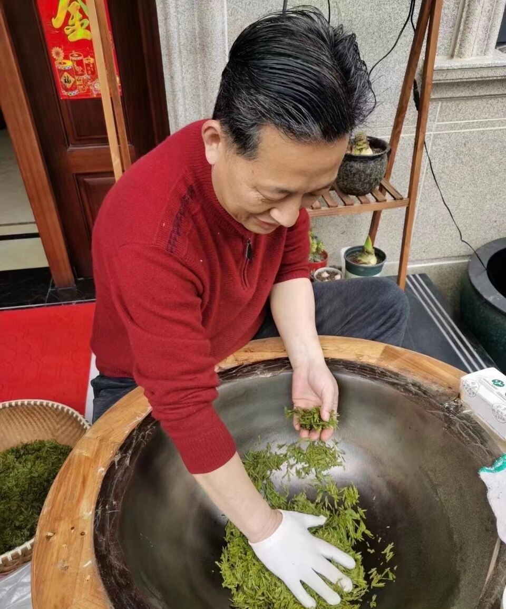

What “the Way of Tea” really means in China: history, practice, aesthetics, and misunderstanding
Created: · Updated:
“The Way of Tea” is often presented in English as though it were a fixed mystical doctrine. In reality, the phrase carries a broader and more layered set of meanings. In Chinese history, tea is not only a spiritual symbol. It is also a material culture, a social practice, an aesthetic discipline, a moral language, and a record of changing everyday life.
One reason “the Way of Tea” is so easy to misunderstand is that it sounds complete the moment it is translated. The phrase feels elegant, self-contained, and already philosophical. But in Chinese contexts, tea culture developed across many centuries, regions, social classes, and practical situations. It was never just one thing. At different moments it could be elite, monastic, literary, domestic, commercial, technical, ritualized, improvised, or deeply ordinary.
This matters because once tea culture is reduced to a single spiritual slogan, readers lose the real richness of the subject. Tea in China was never only about serenity. It was also about methods, objects, trade, hospitality, taste judgment, cultivated attention, and the social worlds built around daily preparation and shared drinking.
Tea became meaningful in China not through one abstract doctrine, but through repeated practices, objects, settings, and cultivated habits that acquired moral and aesthetic weight over time.
1. Why the phrase invites oversimplification
English-language readers often encounter tea culture through compressed formulas: harmony, ritual, calm, meditation, purity. These formulas are not entirely wrong, but they are incomplete. They tend to flatten centuries of historical change into a single mood. They also make tea culture seem more removed from ordinary life than it really was.
Chinese tea history is full of practical detail: how tea was processed, how water was chosen, how vessels were used, how gatherings were staged, how taste was judged, how social identity was performed, and how literary people turned everyday acts into refined forms of attention. “The Way of Tea” becomes more meaningful when it is read through those details rather than through a generalized atmosphere alone.
2. Tea as practice before tea as abstraction
Before tea became a philosophical symbol, it was already a material and social practice. People planted it, processed it, boiled it, whisked it, steeped it, served it, traded it, praised it, and criticized it. The objects of tea life mattered: bowls, kettles, water quality, heat control, leaf form, vessel shape, serving etiquette. Tea culture grew because repeated practical acts gradually accumulated aesthetic, literary, and ethical meaning.
That is an important correction to romantic simplification. “Tea way” is not valuable because it floats above reality. It is valuable because it emerged from repeated attention within reality.
3. The historical layers of tea culture are not identical
Different periods in Chinese history treated tea differently. Tang tea culture, Song whisked-tea culture, Ming loose-leaf tea developments, literati practices, regional customs, and later commercial and domestic habits do not collapse neatly into one unchanged tradition. They belong to a long historical continuum, but they are not interchangeable. If readers imagine “the Way of Tea” as a single unbroken doctrine, they miss the most interesting thing about it: its adaptability.
Tea remained meaningful not because it never changed, but because it kept being reinterpreted. That is one reason it still matters today.
Tea history is not only about symbols. It is also about leaves, vessels, methods, and the changing practical forms through which taste became culture.
4. Why aesthetics matter so much in tea
Tea culture in China often turns small differences into meaningful differences. Water, temperature, vessel, pace, texture, light, gesture, and atmosphere can all matter. This does not mean every tea act is grand or sacred. It means tea became one of the places where cultivated attention could be practiced. Aesthetic seriousness in tea is often less about luxury than about sensitivity: the idea that apparently small choices alter experience.
This helps explain why tea has long appealed to scholars, artists, and people drawn to forms of disciplined appreciation. Tea made it possible to turn ordinary life into a site of refinement without requiring spectacular wealth or grand architecture.
5. Tea as a moral and social language
Tea was also a social medium. It organized hospitality, conversation, reputation, and social style. Offering tea, discussing tea, serving tea well, or selecting tea carefully could all carry moral overtones. Tea could signal respect, restraint, taste, composure, or cultivated simplicity. In some contexts, it was a language of civility. In others, it was a language of intimacy or scholarly self-fashioning.
This is another reason not to over-spiritualize the phrase. Tea culture was not only inward-looking. It also belonged to real social worlds, with real performance, distinction, and interaction.
6. What modern readers often misunderstand
Modern readers—especially outside Chinese contexts—often imagine tea culture as a complete escape from modern life. But historically, tea was not meaningful because it was outside ordinary existence. It was meaningful because it reorganized ordinary existence through attention, taste, rhythm, and shared forms. Its refinement did not depend on removing the world. It depended on re-reading the world through more careful practice.
This matters today as well. When contemporary people return to tea, they may be looking for calm, but they are also often looking for pace, structure, sensory clarity, and a less chaotic way of being present. The deeper continuity is not mystical retreat. It is disciplined attention.
Tea culture is often less about escape than about learning how to attend differently to ordinary acts.

The meaning of tea cannot be separated from technique, craft, and the historical practices through which tea entered daily life.Tea remains alive because it continues to connect material practice, social life, and cultural imagination across changing eras.
7. Why “the Way of Tea” still matters now
It matters because tea remains one of the most durable ways Chinese culture has linked objects, habits, taste, ethics, and social form. Even as tea moves into modern retail, lifestyle branding, and global circulation, older questions remain active: how should one prepare, pay attention, host, judge, and inhabit a moment? These are not obsolete questions. Tea keeps them available in a modest and portable form.
That is why “the Way of Tea” should not be read as a frozen slogan. It is better understood as a historical field of practices through which ordinary acts acquired aesthetic and moral density. That reading is less mystical, but much richer.